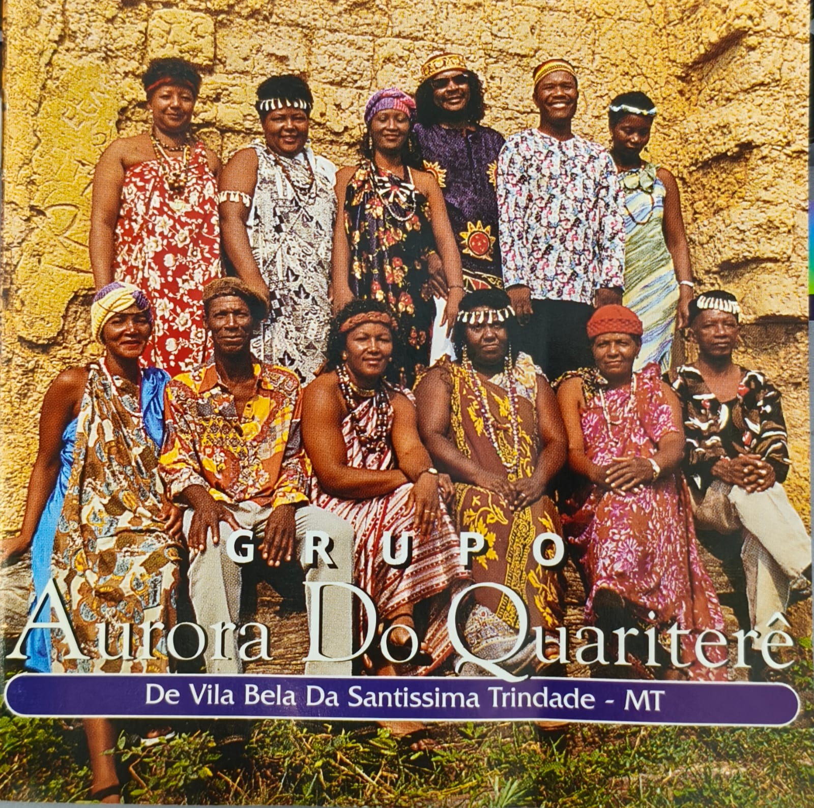

Mais de 100 anos de história, tradições e resistência cultural em
Vila Bela da Santíssima Trindade - MT
Dedicamos nossa missão a preservar, valorizar e fomentar a rica cultura quilombola de Vila Bela da Santíssima Trindade - MT, onde mais de 100 anos de isolamento forjaram uma identidade cultural única e profundamente africanizada.
Após 1835, com a mudança da capital para Cuiabá, nossa comunidade desenvolveu autonomamente tecnologias sociais únicas em educação, saúde e agricultura.
Articulamos e organizamos comunidades quilombolas da região, promovendo sua integração aos movimentos estadual e nacional.
Fundado por seis membros dedicados à preservação cultural
Carregando diretoria...
de tradições preservadas através de gerações que resistiram ao tempo e às adversidades.
Sons que ecoam através do tempo, preservando nossa herança musical quilombola

Coletânea Musical Quilombola
Tradição Quilombola
Carregando descrição...
Iniciativas que celebram e preservam a rica herança cultural quilombola de nossa comunidade
Acompanhe as novidades e acontecimentos do Instituto Tereza de Benguela
O Instituto Tereza de Benguela preserva mais de um século de tradições culturais únicas. Sua contribuição fortalece nossa missão de manter viva a herança quilombola para as futuras gerações.
Vila Bela da Santíssima Trindade - MT
Primeira capital de Mato Grosso
520km de Cuiabá
Comunidade Resiliente
Mais de 100 anos de autonomia
(65) 99247-4141
institutoterezadebenguela@gmail.com